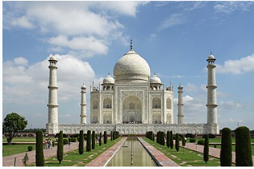

TAJ MAHAL
The Taj Mahal (/ˌtɑːdʒ məˈhɑːl, ˌtɑːʒ-/; lit. 'Crown of the Palace') is an ivory-white marble mausoleum on the right bank of the river Yamuna in Agra, Uttar Pradesh, India. It was commissioned in 1631 by the fifth Mughal emperor, Shah Jahan (r. 1628–1658) to house the tomb of his beloved wife, Mumtaz Mahal; it also houses the tomb of Shah Jahan himself. The tomb is the centrepiece of a 17-hectare (42-acre) complex, which includes a mosque and a guest house, and is set in formal gardens bounded on three sides by a crenellated wall.

This link takes you to the official wikipedia page
Etymology
The name "Taj Mahal" is of Urdu origin, and believed to be derived from Arabic and Persian, with the words tāj mahall meaning "crown" (tāj) "palace" (mahall).[4][5][6] Abdul Hamid Lahori, in his book from 1636 Padshahnama, refers to the Taj Mahal as rauza-i munawwara (Perso-Arabic: روضه منواره, rawdah-i munawwarah), meaning the illumined or illustrious tomb.[7] The name "Taj" might have been derived from the corruption of the second syllable of "Mumtaz"